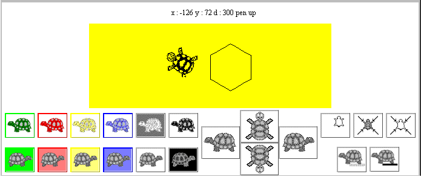

The semi-direct interface uses a collection of TuttleButtons to allow the user to control a tuttle instance. The appearance of the interface is illustrated in Figure 5.4.

Figure 5.4 The SemiDirectTuttle interface, (with the drawing area reduced in height).
There is a total of 21 TuttleButtons in the tuttleControl Panel at the bottom of the interface and grouping has been used to help indicate to the user the different functions which the buttons control. The collection of six buttons at the top left of the Panel is used to control the tuttle's drawing colour; the colour of the tuttle in each button indicating the colour which the tuttle will draw with. The collection of six buttons below it control the background colour of the drawing area, with the button's background illustrating the colour which it will be cleared to. Apart from the black and white buttons, at the right of each collection, each button uses a border colour appropriate to its effect.
The collection of buttons at the top right of the panel control the screen functions and indicate, from left to right, clearing the drawing without resetting the tuttle, resetting the tuttle without clearing the drawing and both clearing and resetting the tuttle. The two buttons below this collection indicate pen up and pen down. The collection of four larger buttons in the center of the panel control the movement of the tuttle. The two buttons in the center indicate moving forwards (up) and backwards (down) and the remaining two turning to the left and turning to the right.
As well as using the spatial position of the buttons to indicate their effect, both by grouping related effects together and, in the case of the movement buttons, their relative locations, the appearance of the buttons is used to communicate their effect. For the colour buttons this is done by using the appropriate colour for their foreground and background, all the other buttons are presented with grey scale images. The use of left facing tuttles for the foreground and right facing tuttles for the background buttons is intended to reinforce this distinction.
The image used on each button, hopefully, gives an iconic representation of the button's effect. For example the dotted line below the pen up button indicates that as the tuttle moves it will leave no trace, particularly in comparison with the other button in the group which has a solid line below the tuttle. The icons used on the buttons should ideally be designed, and produced, by a graphic artist who is trained to communicate ideas by images in an aesthetically pleasing manner, (unlike these buttons which were designed by a complete amateur, the author!).
However there are very few images which clearly and unambiguously communicate the essence of an object or an action in a culturally independent manner, and it is likely that all of these have already been discovered. Accordingly, even though techniques can be used to improve the communicative impact of icons, it should not be assumed that the users will always be able to derive the meaning of an icon from its appearance and a help system, or training, should be available for the users of an iconic interface.